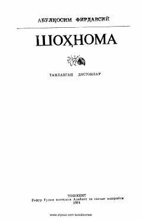

SAbulqosim Firdavsiyning mashhur «Shohnoma» dostonidan saralangan namunlar to'plami.
Ushbu kitob buyuk fors shoiri Abulqosim Firdavsiyning jahonga mashhur «Shohnoma» dostonidan saralangan namunlarni o'z ichiga oladi. Asar asrlar davomida xalqlar qalbidan joy olib, Sharq va G'arb adabiyotiga ulkan ta'sir ko'rsatib kelmoqda. Kitobxonlar unda qadimiy rivoyatlar, qahramonlik va adolat mavzularidagi sara dostonlar bilan tanishadilar.